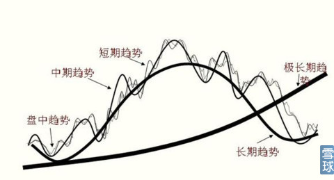
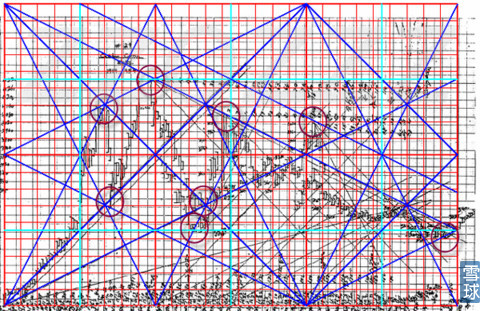
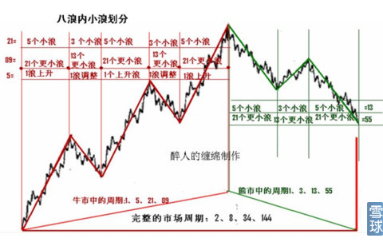
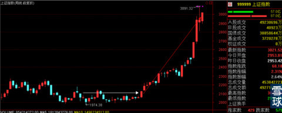
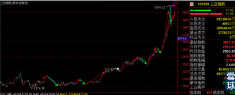
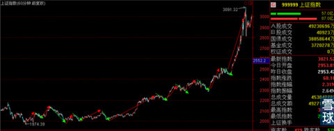
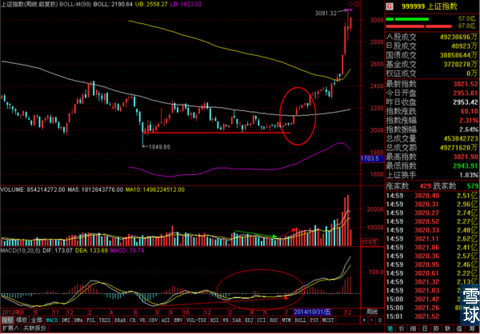
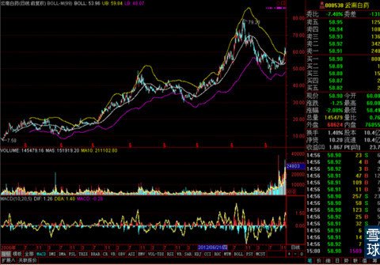

今天在知乎上回答了一个问题，感觉对大家理解技术分析有一定的帮助，所以贴过来给大家看一下。
这个问题正好是我最近在写稿过程中，重新梳理的重点，这里简单给大家讲一下。
首先我觉得任何说技术分析没有用，或者说技术分析千人千结论的说法都是错的，觉得技术分析结果是公说公有理婆说婆有理的，显然是对技术分析理解的太肤浅的说法，技术分析的正确性确实是有一定概率性的，但是大多数情况下，正确的分析过程，得出的结果必然是趋向一致的，如果不是那只能说明有的观察者对细节的观察不到位，和对技术分析掌握的完全不成系统。
至于有的答案说大量的训练和总结，这个说的没错。但是问题是，我如果告诉一个想成为刘翔的孩子说，你就跑吧，天天跑，天天练你就会成功。你觉得这个现实么？即使是刘翔那样的天赋，也是需要科学训练的，七步上栏还是八步上栏都是经过反复论证最后才决定的。所以技术分析也是一样的，必然是需要科学一点，系统一点的学习方式才能有效率。否则会浪费大量的时间，甚至是资金成本的亏损作为学费的。
学习技术分析的关键，首先要知道技术分析是什么。如果连这个都不讲清楚，那还谈得上回答问题么？
技术分析是的根基大多数投资者都听说过，也就是道氏理论中的三大假设和三大定律。
其中最重要的是三大假设，
第一假设：市场行为包容消化一切信息
第二假设：市场运行以趋势方式演变
第三假设：历史会重演股票的形态是通过图形表现出来的
而三大假设中提到的几个关键词：趋势，形态和图形等等又是以什么方式表达出来的呢？
估计这个就会有很多人回答不出来了。
所以我们要学习技术分析第一个要记住的就是技术分析中一切要素的表达形式，或者是说技术分析中必须要观察的内容。这个一共是四样——价，量，时，空。
其中价不用说了，这个别说是做股票交易的，就是完全不碰股票的，偶尔也会打听一下。
对量的关注也很普遍，很多投资分析类的书籍中都把价量关系挂在嘴边。
对时的关注就比较尴尬了，大多数处于入门阶段的投资者只有在买卖的时候才对时间这个要素比较感兴趣，平时大多都别重点放在去价格的关注上了，对时间要素往往有忽视。
对空的关注在普通投资者中就非常少见了，而空说的就是走势图中的空间位置，这是一个极其重要的技术分析要素。一旦忽视，对技术分析使用的效率讲造成灾难性的影响。
而技术分析的奠基人——查尔斯，道。除了做出了三大假设和三大定律之外最大的贡献就是对趋势的划分，而对趋势的划分就是对价格走势的一种重新定位。

他对短中长三种趋势的划分给投资者重新认识价格变动规律的机会，但是问题还远远没有解决，那就是判断趋势是最关键的，但是判断趋势的转折点才是最有实际意义的。而道氏理论对趋势转变的研究是很弱的一环。
针对这种情况，后来的技术分析大师们给出了三个方向。
最早的有系统性的是威廉江恩，他对趋势转折点判断的方式主要是借助时间和空间，时间就是玄而又玄的江恩时间轮，空间就是江恩角度线和外接圆等在走势图做线的方式。
举个典型的例子，大家就会比较好的理解什么叫对空间的重视。

江恩的画线方法和其它技术分析方式完全不同，他的画线不是追着价格在走，而是在走势图中把价格走过的这个线条之外的整个空间，都切分为无数个小空间。不追着价格走，而是提前埋伏好，等待价格走势和这个线条出现的位置关系来对未来走势进行判断。
在使用空间判断法的同时，使用时间轮等时间判断法来相互佐证，一旦遇到两者叠加指向同一个结果的时间就积极做出买卖行为。
而另外的一个方向的艾略特的波浪理论，波浪理论对空间的重视一直都不多，只有后期为了解释数浪的一些疏漏之处，艾略特才加入了黄金分割线和斐波那契数。其中黄金分割是空间性的，斐波那契数列是时间性的。

而他的理论主体部分——数浪，就是追踪价格变动，对价格趋势性做线性研判。
之后比较体系性的技术分析理论大多数都没有逃出江恩系统和波浪系统的范围，所以大多数技术分析的方式都可以归类到这两派的门下。
但是我们会发现，在这两大系统之中，我们都没有发现关于“量”的影子，这个原因其实很简单，因为这两大系统成型的时间都是1950年之前，那时候的通讯手段很落后，所有的技术分析图表都是手绘的，所以一来分析方式中所有的作图都是尺规作图，也就是除了直线就是圆。二来没有办法统计每天的总成交量画到图表中去，所以这两大体系中很多提及“量”这种要素。
而到了1960年之后，随着通讯手段的发展和计算机在证券交易中的使用，出现了大量新的技术分析指标，例如MACD,BOLL,KDJ,RSI等等。这些指标只要是根据价格和时间，使用一定的公式进行计算和绘图。通过图形传递的一些信号对证券的价格做技术分析。其中少量指标会涉及成交量，也就是我们看到的那些简称中带V的指标，例如VMACD,OBV等指标。但是这些指标中对空间性的思考一般来说比较缺乏。大量使用这类指标对证券走势进行研判的，可以算是第三派。
只有清楚了整个技术分析发展史和个派别之间的优劣，才能谈得上有效学习。而不是没有系统的，这边学了一星半点，那边再学一知半解就去对证券走势进行研判，这种没有一定之规的技术分析方式，用膝盖想都知道是不靠谱的。
之前在专栏里说过，很多投资者对技术分析学习过程中还有一个关键难点就是，技术分析的很多书籍中给出的都是些口诀，什么顶背离看跌，底背离看涨。这个就像武侠小说中给门派心法一样，行家知道了可能马上会用，新手死记硬背了，基本没有效果。有些稍微靠谱的书中会给一些招式，也就是技术分析的图例，告诉你什么样的情况是好的，什么样的图形是坏的，之后就靠大家自己的套用。但是练武功只会口诀和招式就行么？不清楚口诀，招式和实际情况间的逻辑的话，必然是一种机械化的操作，这种情况下，只有严格执行操作纪律的投资者有机会保证盈利，大多数投资者还是不得其门而入。
那么这些口诀，招式和实际使用怎么有机联系都一起呢？
以我自己的分析方式为例，首先我最重视的要素和四大要素中的"空"，这也是为什么我的头像是威廉江恩，这是我对这位空间大师的致敬。因为技术中的空间性是对未来走势预判最关键的东西。
我虽然也会去使用江恩的那些角度线等工具，但是我觉得既然我们是现代人，有更多的新型技术指标可以供我们选择和使用，所以可以不用去费心劳力的画那种空间线，而且那些空间线的起始点位选择还是有主观性的存在，所以我选择了相对客观的BOLL作为空间划分指标，参数选用了殷保华的BOLL（99）。效果和具体用法是这样的。

这样一来，BOLL上中下三轨就是最好的支撑线和压力线指标，同时也是空间性指标，更是趋势性指标。
先说空间性指标，在上轨之外的都是超强势区域，一旦价格进入到这个区域之后，就会加速上涨，很难马上掉头向下，也就是所谓的牛市不言顶。
中轨和上轨之间的强势区域，价格在这个区间中会保持稳步上涨。
下轨和中轨之间的弱势区域，价格在这个区间的变动几乎都是反弹之下下跌，很少有大作为。
下轨之外的都是极弱势区域，价格在这个区间中往往很难持久，几乎是到达这个区域一段时间后，很快就会引发一轮反弹，回到弱势趋势中去。
再说趋势性效果，我们既然知道价格在四个区域中的效果完全不一样的话，那么我们遇到BOLL收窄的很小范围内我们会想到什么？对！价格的一举一动都可能马上进入一个新区域，进到新区域之后可能走势就完全不一样了。那么每次BOLL收窄到一定程度的时候，就是新趋势要出现的时候，这个新趋势可能是对老趋势的扭转，也可能是沿着老趋势变化角度进行加速延续。而同理，当BOLL扩张到极大的时候，也可能会是一次趋势的结束和新趋势的开始。
同时BOLL的中轨有明确的指向性，向上是上涨趋势，一路走平是盘整趋势，向下是下跌趋势。在每个趋势中操作思维都是不一样的，下跌过程只能轻仓抢反弹，上涨趋势持有跟风，盘整趋势做波动。
而压力与支撑就更明显了，向上的支撑线支撑效果最好，水平的可能被反复穿越，向下的几乎没有太好的支撑效果。反过来成为压力线指标的时候道理是一样的，正好是效果相反。
那么现在技术分析中关于空间性的问题的我们在继承江恩理论的基础上用新型的BOLL来进行了处理，那么关于时间性我们怎么办？
我的办法是不用时间轮，而是用现代计算机技术和通讯效率下的新武器，各种不同周期指标来解决。而且在这以解决过程中，正好合并吸收波浪理论在国内的最新成果——缠论来帮助，简直是一举两得。
来吧，我们一起看个图例。



这三幅图中，在周线上看今年下半年的走势就是单纯的横盘——上涨走势，日线就有明显的波动性了，而到了60分钟线上日线级别的波动就被放大成了趋势。如果用PS把这三幅图叠放在一起，几乎就是理论理论的的典型。这样不仅对时间点的判断有了明确的依据，也消除掉了机械化数浪的种种尴尬。
现在我们对空间，时间和价格本身都做了分析，那么剩下的就是使用成交量和其它新型技术指标对我们观察效果的佐证和检验，只要能通得过这个四大要素检验的，基本都可以作为一个好的买卖点进行操作。
举个具体例子，也就是我为什么敢在8月初大胆预言牛市即将到来，

首先那个时间点上，价格本身就处于相对低位，之前的价格趋势是横盘整理，这是对价的考虑。而成交量有明显的温和缩量——放量过程。空间上8月第一周指数从之前的弱势区域进入强势区域。
同时新型技术指标MACD有复合底背离出现，佐证了之前的观察结论。而时间上，在周线需要突破的时候，日线上指数已经先于周线进入超强势区域，时间点上配合的刚刚好。

所以综合考虑价量时空四大要素进行的技术分析结果的有效性是很明显的，绝非什么各人有各人的解读，在这样的走势图面前，感觉突破之后可能有回踩可以，但是要是说没有牛市希望的，只能说是技术分析的门都没摸到。
总得来说，技术分析的学习最重要的是对四大要素的重视和理解，有的时候价格上去了，但是所处空间位置不好，那么只能是反弹而非反转。有的时候进入好的空间的，价格跟不上是因为各周期的时间点共振没达到。只要综合考虑价量时空都没有问题的话，那么效果一定是指向一个确定答案，而且答案的正确率将是很高的。
至于具体选择什么样的指标构建自己的判断系统，我的办法仅仅是个例子，大家可能根据自己的习惯自由配置，只要充分包含到价量时空就可以。在这个基础上多实践，多观察，多总结才有效。如果四大要素从来都只考虑两种及以下，怎么努力都白费。
还有就是眼界要宽，波浪理论和江恩理论等等是开代宗师的杰作，但是死抱着过时方法去使用，效果只能是事倍功半，得不偿失。
有小伙伴要求举个个股的例子，那就用云南白药的好了，大家可以自己感受一下价量时空四大要素的关键性，趋势及趋势转折点的出现与技术指标之间的关系。

最后要说的是，即使技术分析的学习和掌握是有比较科学和系统的方法的，但是过程依然是很艰辛的，学会了能不能用好，每次观察的关键点是不是都观察到位了，都是大问题。我自己就是足足花了五年时间才学到现在这点皮毛的。我把我的经验说出来，可能会帮大家节省2年的摸索期。但是依然需要2-3年时间去学会怎么精确化和合理性的驾驭它。技术分析的学习过程一定都不比学个医学和法律什么的简单，所以大家还是对证券投资，尤其是短线的操作尽量保持谨慎的好。